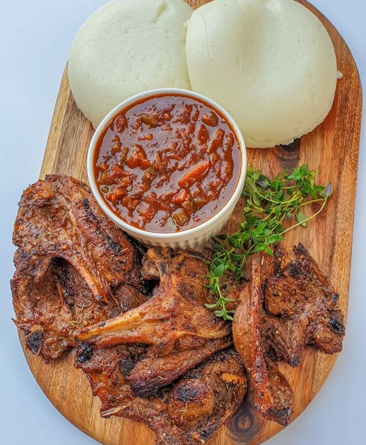
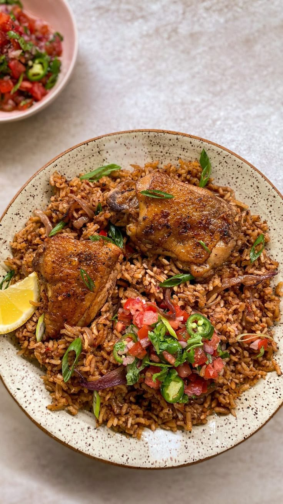
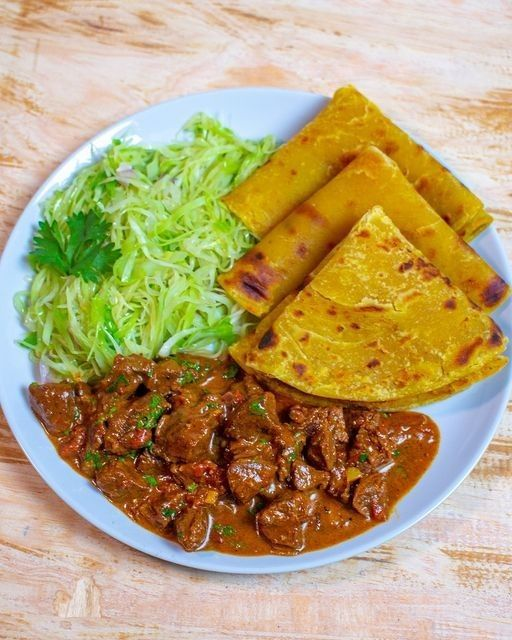

Kenyan cuisine combines traditional African cooking with influences from Indian, Arab and other cultures. Food varies from region to region, making travelling around Kenya a great opportunity to discover different flavours
Nyama Choma
Nyama choma means "roasted meat" in Swahili
It is one of Kenya's most popular dishes and is commonly enjoyed during social gatherings and celebrations.
What to expect:
Pieces of roasted meat served alongside traditional sides and sauces. Goat meat is particularly popular.
Nyama choma means "roasted meat" in Swahili.

Ugali
Ugali is a staple food throughout Kenya.
It has a firm, dough-like texture and is usually eaten alongside meat, vegetables or stews.
A simple but filling side dish that is traditionally eaten with the hands.
Sukuma Wiki
Sukuma wiki is a popular leafy-green vegetable dish
The name is often translated as "stretch the week", reflecting its importance as an affordable everyday food.
Cooked leafy greens served as a side dish, often alongside ugali and meat.

Pilau
Kenyan pilau is a fragrant rice dish influenced by the cuisines of the East African coast.
Spiced rice served with meat, vegetables and a variety of accompaniments.

Chapati
Chapati is a flatbread that is extremely popular in Kenya.
It can be eaten on its own or served alongside stews, beans, meat and vegetables.
Soft, layered flatbread with a lightly crispy outside.
Mandazi/African Donuts
Mandazi is a popular East African snack that is similar to a lightly sweetened fried bread.
Small pieces of sweet, fried dough commonly enjoyed with tea or coffee.
Kenyan Chai tea
Tea is an important part of Kenyan food culture.
Kenyan chai is often served with milk and sugar and can be enjoyed throughout the day.